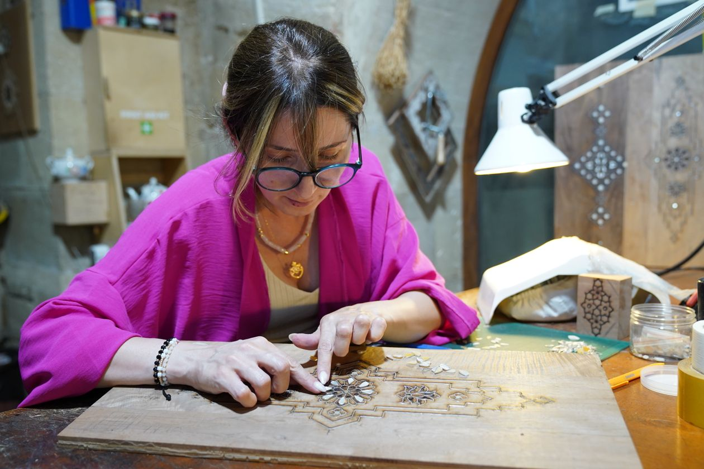

The artisan

Amira Saleh came to marquetry through the repair bench. She trained first in furniture restoration — four years of re-laying other people's veneer, reviving finishes and re-cutting stringing on pieces two centuries old — and it taught her the trade from the inside out: you cannot restore a picture in wood until you understand exactly how it was made.
She then spent two years in Damascus, learning the geometric inlay tradition in workshops where the mosaic patterns are still built up strip by strip and sawn with a frame saw, much as they were when the craft was young. The Damascus box on the projects page is where that training shows most plainly.
Eighteen years at the bench, the last eleven in her own workshop in Bath. The work divides roughly in thirds: new panels and boxes to commission, inlay for furniture makers who need a specialist hand, and restoration — the bench she started on, and still the work she would choose if she could only keep one kind.
Everything is cut by hand. There is no laser cutter in the workshop and no CNC router; not from stubbornness, but because a hand-sawn joint closes in a way a burnt or machined edge never quite does, and because the slight life in a hand-cut line is the difference between a picture and a print of one.
Species kept in stock
Veneer is bought by the flitch — a sliced log, kept in sequence — so that consecutive leaves match. The library holds around sixty species; these are the ones in constant use. Dyed veneers are sycamore or ash, dyed through in the workshop, never surface-stained.
| Species | Bench notes | Typical use |
|---|---|---|
| Walnut, incl. burr | American black and English; burr reserved for small areas — it tears if you look at it sternly | Grounds, foliage, shadow |
| Sycamore | The workhorse pale wood; also the dyeing stock | Sky, water, distance (dyed) |
| Ebony | Macassar for striped work, Gaboon for true black; bought rarely, used sparingly | Outline, night, accents |
| Holly | Must be cut young and stored dark or it greys | White highlights, snow, sails |
| Boxwood | Fine enough to take an engraved line | Stringing, lettering, detail |
| Burr oak | Figure like rough stone; fragile at the edges | Rock, treetops, texture |
| Cherry & pear | The warm mid-tones; pear is finer and steadier for faces | Brick, autumn colour, flesh |
| Spalted beech | Black zone lines from the fungus that colours it; every leaf different | Weathered wood, old walls |
| Bog oak | Peat-preserved, blue-black, brittle — cut thick or not at all | Dusk water, deep shade |
| Rosewood | Reclaimed stock only — the species is CITES-listed and no new timber is bought | Restoration matching |
| Satinwood | Golden, with a shimmer that moves as you pass | Sunlight, harvest fields, highlights on furniture |
| Mother-of-pearl | Not a wood, but the library keeps it with the veneers; sawn wet, slowly | Stars, water sparkle, inlay plaques |
What the work is done with
- Frame fretsaw & 2/0 bladesPacket cutting, fine curves
- Veneer knives & scalpelsPiece-by-piece work, mitres
- Hot-sand trayShading edges in silver sand
- Veneer hammer & glue potLaying with hot hide glue
- Screw press & caulsPressing panels flat
- Cabinet scrapersLevelling — never sandpaper on a picture
- Shooting board & hand planesGrounds and straight joints
- French polish rubberShellac, built up by hand
Caring for marquetry
-
Light
Sunlight is the enemy, especially of dyed veneers and holly, which fade and grey. Hang panels out of direct sun; if a piece must live in a bright room, say so before it is made and the palette can be chosen for it.
-
Humidity
Wood moves with the air. Keep the room between roughly 45% and 60% relative humidity — ordinary lived-in rooms are fine; conservatories and bathrooms are not. Never place a panel above a radiator.
-
Cleaning
Dust with a soft brush or a dry cloth. Nothing wet, nothing with silicone in it — silicone sprays soak in and make any future repair or re-polish nearly impossible.
-
Polishing
French-polished pieces want a beeswax polish once or twice a year, sparingly. Oil-finished panels can be refreshed with the same hard-wax oil; I supply a small tin and instructions with every piece.
-
Damage
Chips and lifted corners are repairable, and cheaper repaired early. Keep any piece that comes away — a fragment the size of a fingernail can be re-laid invisibly, where a replacement has to be matched and toned.
Questions about a piece you own?
Care questions are answered free, whether or not I made the piece. Restoration assessments are £60, credited against the work.